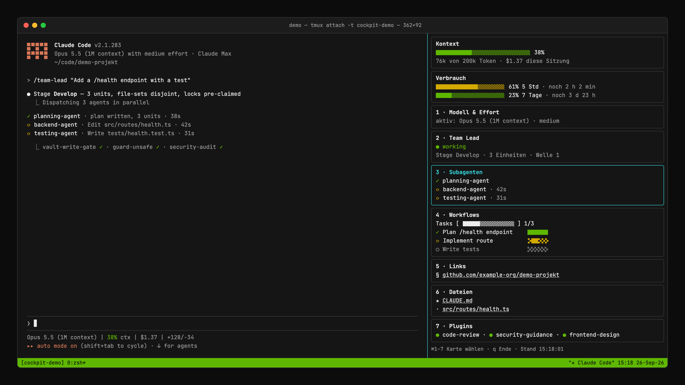

R.Code for Claude Code
Build smarter. Build better.
A complete, portable Claude Code setup: guardrails that hold, a team of specialist agents, a live Cockpit for your terminal — and a framework that never learns your real names.

Live components from the R.Code for Claude Code design system, with demo data — see Cockpit for the full six-card dashboard.
1 · Guardrails that don’t negotiate.
Deterministic gates run before every tool call — no language model in the gate. Dangerous commands, force-pushes, production migrations and secret leaks are stopped before they run; anything irreversible always gets a human yes/no, even in autonomous mode.
2 · A team, not a chatbot.
Twelve specialist agents — planning, backend, testing, review, UI, research and more — dispatched in parallel on locked file sets. /team-lead decomposes the work, delegates it and reviews every wave.
3 · See it in the Cockpit.
A tmux sidebar next to Claude Code: context and cost, running subagents, workflow progress, links and files — updated live from the same hooks. (Companion repo: claude-cockpit; screenshots show demo data.)
4 · Pseudonymized by design.
Real project names, machine paths and personal identifiers live only in a local vault. Every write, every commit and every publish is checked: 0 real values in any tracked file.
It learns from the work.
Friction in a session becomes a signal; signals become reviewed proposals; you decide which become rules. Nothing changes the framework without a human.
21 always-loaded rules, 22 commands, 51 skills, 12 agents, 42 hooks, 3 scheduled routines (tracked in the published repo)
28 regression suites, 1,100+ assertions, all green before every release
14 deterministic gates a session meets (guard-unsafe, agency gates, secret scan, vault gate, file/config protection …)
MIT license · macOS, Linux, Windows · one-line install


/team-lead decomposes the work, delegates it and reviews every wave.Install in one line
bash <(curl -fsSL https://raw.githubusercontent.com/emanuelrechsteiner/claude-rcode/main/install.sh)